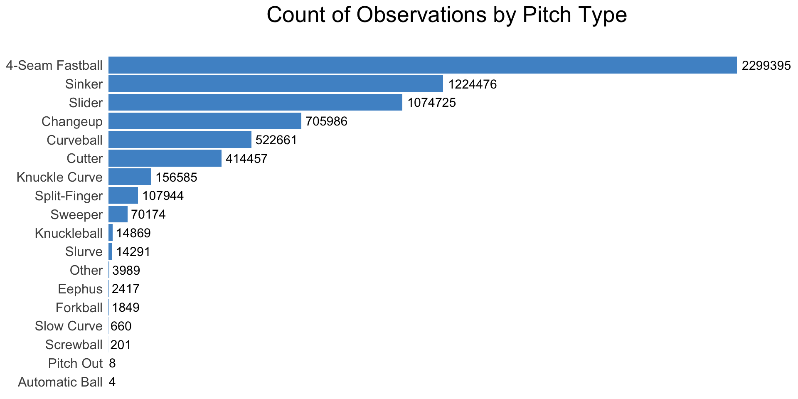
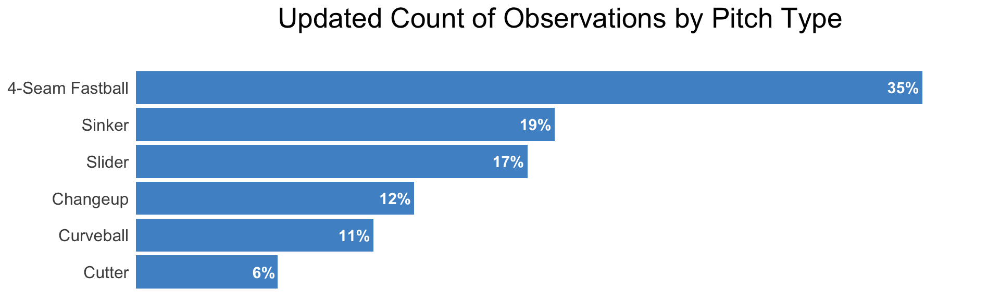

Chapter 2 Extracting, Cleaning, Validating, Transforming
2.1 Extracting Dataset
To begin our project, we will import Statcast data spanning from the 2014 MLB season through the 2023 season. This data is hosted on the Baseball Savant website, with each record representing a single pitch and encompassing a rich set of information across 93 fields. The provided code reads in the pitches for each year, amounting to roughly 710,000 pitches per year, which are stored locally. To replicate the subsequent scripts for the entirety of the project, it is imperative to scrape and store each season’s worth of data using the scripts provided in the GitHub folder. Let’s proceed with this essential data retrieval process.
mlbraw2014 <- read_csv("/Users/dougrose/Desktop/location/raw_statcast/mlbraw2014.csv",show_col_types=0) %>% suppressMessages()
mlbraw2015 <- read_csv("/Users/dougrose/Desktop/location/raw_statcast/mlbraw2015.csv",show_col_types=0) %>% suppressMessages()
mlbraw2016 <- read_csv("/Users/dougrose/Desktop/location/raw_statcast/mlbraw2016.csv",show_col_types=0) %>% suppressMessages()
mlbraw2017 <- read_csv("/Users/dougrose/Desktop/location/raw_statcast/mlbraw2017.csv",show_col_types=0) %>% suppressMessages()
mlbraw2018 <- read_csv("/Users/dougrose/Desktop/location/raw_statcast/mlbraw2018.csv",show_col_types=0) %>% suppressMessages()
mlbraw2019 <- read_csv("/Users/dougrose/Desktop/location/raw_statcast/mlbraw2019.csv",show_col_types=0) %>% suppressMessages()
mlbraw2020 <- read_csv("/Users/dougrose/Desktop/location/raw_statcast/mlbraw2020.csv",show_col_types=0) %>% suppressMessages()
mlbraw2021 <- read_csv("/Users/dougrose/Desktop/location/raw_statcast/mlbraw2021.csv",show_col_types=0) %>% suppressMessages()
mlbraw2022 <- read_csv("/Users/dougrose/Desktop/location/raw_statcast/mlbraw2022.csv",show_col_types=0) %>% suppressMessages()
mlbraw2023 <- read_csv("/Users/dougrose/Desktop/location/raw_statcast/mlbraw2023.csv",show_col_types=0) %>% suppressMessages()Format the game_date column to ensure all years have the same format.
mlbraw <- bind_rows(
mlbraw2014, mlbraw2015, mlbraw2016, mlbraw2017, mlbraw2018,
mlbraw2019, mlbraw2020, mlbraw2021, mlbraw2022, mlbraw2023
)
mlbraw <- mlbraw %>%
mutate(game_date = as.Date(game_date, format="%m/%d/%y"))Create a single data frame containing all years and remove individual year data frames.
mlbraw <- bind_rows(mlbraw2014, mlbraw2015, mlbraw2016, mlbraw2017, mlbraw2018,
mlbraw2019, mlbraw2020, mlbraw2021, mlbraw2022, mlbraw2023)
mlbraw <- mlbraw %>% arrange(desc(game_year), desc(game_date), game_pk)
rm(mlbraw2014, mlbraw2015, mlbraw2016, mlbraw2017, mlbraw2018,
mlbraw2019, mlbraw2020, mlbraw2021, mlbraw2022, mlbraw2023)2.2 Explain Variables of Interest
Now that we have a comprehensive data frame containing all MLB pitches from the past 10 years, we’ll narrow down the variables to those specifically relevant to our project. The selected variables are:
game_year: Represents the year in which the game was played. pitch_name: Denotes the name of the pitch type thrown by the pitcher (e.g., Fastball, Curveball). pitch_type: Signifies the abbreviated pitch_name (e.g., FF represents a 4-Seam Fastball). p_throws: Indicates whether the pitcher throws right-handed or left-handed. stand: Specifies whether the batter stands right-handed or left-handed. balls: Represents the number of balls before the pitch of record. strikes: Indicates the number of strikes before the pitch of record. events: Identifies the event that transpired as a result of this pitch (e.g., single, walk, hit by pitch, home run). plate_x: Signifies the horizontal location of the pitch as it crosses the plate, measured in feet away from the center of the plate. plate_z: Represents the vertical location of the pitch as it crosses the plate, measured in feet off the ground.
By focusing on these specific variables, we aim to streamline the dataset for further analysis and visualization, aligning with the project’s objectives.
2.3 Create New Variables
The refined dataset will feature columns: year, p_type, count, hand, events, plate_x, plate_z, lw.
Now I will generate a singular column detailing the outcome of each pitch. The original events column exclusively displays a value when the pitch results in a batter outcome, such as a walk or a single. NA values will signify pitches that do not conclude at-bats, such as balls and strikes. This newly created events column will outline the outcome of every pitch.
In addition, I will combine the values in the strikes and balls columns to craft a new count column. This column will signify the batter’s count state for each pitch occurrence.
The stand column designates whether the batter hits right-handed or left-handed, while the p_throws column indicates whether the pitcher throws right-handed or left-handed. For the specific objectives of this project, I am focusing on the combination of batter and pitcher handedness, and the new column hand will detail this.
mlbraw <- mlbraw %>%
mutate(
events = if_else(is.na(events) | events == "", type, events),
events = if_else(events == "B", "ball",
if_else(events == "S", "strike", events)),
count = paste(balls, strikes, sep = "-"),
hand = paste(p_throws, stand, sep = "v")
) %>%
select(
game_year, hand, count, pitch_type, pitch_name,
events, plate_x, plate_z, delta_run_exp
)A batter’s count is limited to one of 12 possible counts. Therefore, I will filter the data to exclude impossible counts. Additionally, I will eliminate events that are impossible in specific counts. For instance, a batter cannot draw a walk in a 2-2 count.
mlbraw <- mlbraw %>%
filter(count %in% c("0-0","0-1","0-2","1-0","1-1","1-2",
"2-0","2-1","2-2","3-0","3-1","3-2"))
mlbraw <- mlbraw %>%
filter(!(count == "3-2" & events == "ball")) %>%
filter(!(count == "3-1" & events == "ball")) %>%
filter(!(count == "2-2" & events == "walk")) %>%
filter(!(count == "2-1" & events == "walk"))Convert the data type of these variables to factors, restricting the possible values and establishing specific orders.
mlbraw <- mlbraw %>%
mutate(count = factor(count, levels = c("0-0", "0-1", "0-2", "1-0", "1-1", "1-2",
"2-0", "2-1", "2-2", "3-0", "3-1", "3-2")),
hand = factor(hand, levels = c("RvR", "RvL", "LvR", "LvL")),
game_year = factor(game_year, levels = c("2014", "2015", "2016", "2017",
"2018", "2019", "2020", "2021",
"2022", "2023")))Finally, I’ll remove rows with NA values in our columns of interest.
2.4 Validating Count, Handedness, Game Year
mlbraw %>%
count(count) %>%
mutate(p = n / sum(n)) %>%
ggplot(aes(x = p, y = fct_rev(count))) +
geom_col(fill = "steelblue3") +
geom_text(aes(label = paste(100 * round(p, 2), "%", sep = "")),
hjust = 1.1, size = 4, color = "white", fontface = "bold") +
ggtitle("Batter Count distribution \n") +
theme_minimal() +
theme(strip.background = element_rect(fill = "lightblue"),
axis.text = element_text(size = 12),
axis.text.x = element_blank(),
axis.text.y = element_text(hjust = 1),
axis.ticks.x = element_blank(),
axis.title = element_blank(),
panel.grid.major = element_blank(),
panel.grid.minor = element_blank(),
plot.title = element_text(size = 20, hjust = 0.5)) +
xlim(0, 0.27) +
coord_cartesian(xlim = c(0, 0.27), expand = FALSE)
## Warning in rm(plot1): object 'plot1' not foundThe depicted graph illustrates the distribution of batter counts. From this, I can begin to gauge the extent of available data for constructing a location metric. Notably, 0-0 counts are prevalent, constituting 26% of all pitches, whereas pitches in 3-ball counts are comparatively more rare.
plot2 <- mlbraw %>% group_by(hand) %>% count() %>%
ungroup() %>% mutate(p= n/ sum(n)) %>% select(-n)
ggplot(data=plot2, aes(x=p, y=reorder(hand,p)))+
geom_col(fill="steelblue3") +
geom_text(aes(label = paste(100*round(p,2), "%", sep="")),
hjust = 1.3, size=4, color="white", fontface="bold")+
ggtitle("Pitcher and Batter Handedness distribution \n") +
theme_minimal()+
theme(strip.background = element_rect(fill = "lightblue"),
axis.text=element_text(size=12),
axis.text.x = element_blank(),
axis.ticks.x = element_blank(),
axis.title = element_blank(),
#axis.text.x = element_blank(),
panel.grid.major = element_blank(),
panel.grid.minor = element_blank(),
plot.title = element_text(size=20, hjust = 0.5))+
xlim(0,0.43)+
coord_cartesian(xlim = c(0, 0.4), expand = FALSE)
plot3 <- mlbraw %>% group_by(game_year) %>% count() %>%
ungroup() %>% mutate(p= n/ sum(n)) %>% select(-n)
ggplot(data=plot3, aes(x=p, y=game_year))+
geom_col(fill="steelblue3") +
geom_text(aes(label = paste(100*round(p,2), "%", sep="")),
hjust = 1.3, size=4, color="white", fontface="bold")+
ggtitle("Pitcher and Batter Handedness distribution \n") +
theme_minimal()+
theme(strip.background = element_rect(fill = "lightblue"),
axis.text=element_text(size=12),
axis.text.x = element_blank(),
axis.ticks.x = element_blank(),
axis.title = element_blank(),
#axis.text.x = element_blank(),
panel.grid.major = element_blank(),
panel.grid.minor = element_blank(),
plot.title = element_text(size=20, hjust = 0.5))+
xlim(0,0.43)+
coord_cartesian(xlim = c(0, 0.15), expand = FALSE)
As anticipated, the dataset is fairly evenly divided by game year. Teams typically play 162 regular season games each year, providing approximately 2400 games worth of data annually. The only exception is the 60-game 2020 season, which was shortened due to COVID-19.
2.5 Remove and Transform Event Values
The events column might include various game event descriptions unrelated to the pitch being thrown. For instance, if the pitcher picks off the runner leading off first base or if a coach argues and gets ejected from the game, these events will appear as records in the dataset. For the scope of this project, my focus is solely on pitches thrown, particularly competitive pitches where legitimate attempts are made by the batter. While this criterion has a subjective element, I have opted to narrow down the dataset by excluding the following events.
mlbraw <- mlbraw %>%
filter(!events %in% c("catcher_interf", "caught_stealing_2b", "caught_stealing_3b",
"caught_stealing_home", "ejection", "field_error", "game_advisory",
"intent_walk", "other_out", "passed_ball", "pickoff_1b",
"pickoff_2b", "pickoff_3b", "pickoff_caught_stealing_2b",
"pickoff_caught_stealing_3b", "pickoff_caught_stealing_home",
"pickoff_error_2b", "pickoff_error_3b", "pitchout",
"runner_double_play", "stolen_base_2b", "stolen_base_3b",
"stolen_base_3b", "stolen_base_home"))Wild pitches are currently represented as unique events in the dataset, although in reality, they are simply balls thrown well outside the strike zone. To address this, I have modified the values in the wild_pitch column to either ball or walk, depending on the count in which they were thrown.
mlbraw_a <- mlbraw %>%
filter(count %in% c("0-0","0-1","1-0","1-1","2-0","2-1","0-2","1-2","2-2"))
mlbraw_b <- mlbraw %>%
filter(count %in% c("3-0","3-1","3-2"))
mlbraw_a <- mlbraw_a %>%
mutate(events = if_else(events =="wild_pitch", "ball", events))
mlbraw_b <- mlbraw_b %>%
mutate(events = if_else(events =="wild_pitch", "walk", events))
mlbraw <- bind_rows(mlbraw_a, mlbraw_b) %>%
arrange(game_year, count, events)
rm(mlbraw_a, mlbraw_b)Likewise, foul balls occurring in two-strike counts should be categorized as foul rather than strike. A strike thrown in a 0-2, 1-2, 2-2, or 3-2 count will result in a strikeout. Therefore, when a batter fouls a ball off in these counts, I will assign the event a new value: foul.
mlbraw_a <- mlbraw %>% filter(count %in% c("0-2","1-2","2-2","3-2"))
mlbraw_b <- mlbraw %>% filter(!(count %in% c("0-2","1-2","2-2","3-2")))
mlbraw_a <- mlbraw_a %>% mutate(events = if_else(events == "strike", "foul", events))
mlbraw <- bind_rows(mlbraw_a, mlbraw_b)
rm(mlbraw_a, mlbraw_b)I will categorize the event values into two groups: non-outs and outs, for future reference. And I’ll verify that these represent the distinct event values contained in the main dataset.
non_outs <- c("ball","double","hit_by_pitch","hr", "foul","single",
"strike","triple","walk","wild_pitch")
outs <- c("double_play","field_out","fielders_choice","fielders_choice_out",
"force_out", "grounded_into_double_play","fielders_choice_out",
"sac_bunt","sac_bunt_double_play","sac_fly","sac_fly_double_play",
"strikeout","strikeout_double_play","triple_play")
mlbraw %>%
select(events) %>%
filter(!(events %in% non_outs)) %>%
filter(!(events %in% outs)) # shouldn't return any records## # A tibble: 0 × 1
## # ℹ 1 variable: events <chr>I will uniformly assign the value out to all distinct events that lead to an out, disregarding their specific descriptions. Restricting the possible event values in this manner will be needed in the following steps of this process.
Adjust the order of factor levels for the purpose of plotting.
2.6 Event Outcome Frequency by Count
plot4 <- inner_join(mlbraw %>% group_by(count,events) %>% count(),
mlbraw %>% group_by(count) %>% count(),
join_by(count)) %>%
mutate(p = n.x / n.y) %>%
select(count, events, p) %>%
filter(events != "hit_by_pitch")
ggplot(plot4)+
geom_col(aes(x=events, y=p),
fill="grey",width=0.9, show.legend = FALSE)+
geom_hline(yintercept=0, linewidth=0.1)+
theme_bw()+
ylim(0, 0.63)+
facet_wrap(~count, ncol=3, nrow=4, scales="free")+
ggtitle("Event Outcome Frequency by Count \n")+
theme(strip.background = element_rect(fill = "lightblue"),
strip.text = element_text(size=20),
axis.text=element_text(size=16),
axis.text.x = element_text(angle = 45, hjust = 1,
size=14,color="grey40"),
axis.title = element_blank(),
plot.title = element_text(size=20, hjust = 0.5),
panel.grid.major = element_blank(),
panel.grid.minor = element_blank())
The depicted plot provides a breakdown of event frequencies in various batter counts, particularly when the events have been condensed to 10 values. Notably, a pitcher is significantly more inclined to throw a strike in a 3-0 count than in a 0-0 or 0-2 count. Additionally, there is a increased likelihood of recording an out in two-strike counts compared to no-strike or one-strike counts. A cursory examination of the plot suggests that the outcomes align with my expectations, thereby validating the contents of the dataset.
2.7 Average Delta Run Expectancy
The objective of this project is to quantify the effectiveness of pitch locations, taking into account various factors such as pitch type, count, the handedness of the pitcher and batter, along with the spatial coordinates of the pitch on the x and y plane. However, determining the appropriate metric to quantify and interpret the resulting pitch outcome is a critical consideration.
Within the dataset, there exists a column named delta_run_exp, which denotes the value of each individual event in terms of how the run expectancy changes based on that specific event. Run expectancy is determined for every fixed situation in a game, considering factors such as the location of base runners, the number of outs, and the batter count before the pitch.
Consider the following scenario as an example: an at-bat starts with 0 outs and runners on 1st and 2nd in a 0-0 count. In this specific state, there is an expected number of runs to be scored for the remainder of the inning. For instance, in 2023, an average of 1.465 runs were scored in the remainder of the inning for this particular scenario.
If the first pitch in this at-bat is a strike, a new scenario unfolds with a different expected runs scored for the remainder of the inning—now with 0 outs, runners on 1st and 2nd, and a 0-1 count. The average runs scored for the remainder of the inning in this new scenario will be slightly different, for example, 1.376.
Consequently, the strike thrown by the pitcher has changed the expected runs scored by -0.089, which is reflected in the delta_run_exp column. The fundamental idea is to evaluate every pitch by comparing the expected runs scored that inning before and after the pitch is thrown.
While delta_run_exp seems to be a suitable measure for my location quality metric, it has a drawback. It derives its value from factors like count, outs, base runners, and the resulting event. In this project, the aim is to assess pitches under different conditions, focusing on the average change in run expectancy based on the count and event. Thus, the goal is to transform the existing dataset so that instead of relying on delta_run_exp as the metric of success or failure, a new variable is created to represent the change in run expectancy based on the specified project parameters. This way, when a specific event occurs (e.g., ball, strike, double, fielder’s choice) in a specific count (e.g., 0-1, 2-0, 3-2), we can observe the average change in run expectancy.
re_outs <- mlbraw %>%
filter(events == "out") %>%
group_by(count, events) %>%
summarise(re = round(mean(delta_run_exp, na.rm = TRUE), 4), .groups = 'drop')
re_non_outs <- mlbraw %>%
filter(events %in% non_outs) %>%
group_by(count, events) %>%
summarise(re = round(mean(delta_run_exp, na.rm = TRUE), 4), .groups = 'drop')
re_lookup <- bind_rows(re_outs, re_non_outs) %>% arrange(count, events)
rm(outs, non_outs, re_outs, re_non_outs)Consider each event that leads to an out as a single out event, irrespective of the specific type of out or the number of outs resulting from the play. This approach aims to mitigate the influence of base runners on the changing run expectancy, as well as the impact of the number of outs.
I have separated outs from non-outs and performed an aggregation to determine the average change in run expectancy for every conceivable event in each possible count.
anti_join(mlbraw %>% distinct(count, events),
re_lookup %>% distinct(count, events),
join_by(count, events))## # A tibble: 0 × 2
## # ℹ 2 variables: count <fct>, events <fct>Using the refined mlbraw dataset and the new run expectancy lookup table, we verify whether any combination of counts and events from the two datasets are incompatible. Specifically, we check if there is no combination of count and events existing in one table that is not present in the other.
Additionally, for pitches resulting in a hit by pitch, I have opted to treat the event as if it were a ball. Consequently, I calculate the change in run expectancy from the perspective of ball rather than hit_by_pitch. This choice aims to enhance the continuity between location plots, ensuring that rare hit_by_pitch events do not disproportionately influence specific locations and disrupt the overall analysis.
mlbraw_a <- mlbraw %>%
filter(count %in% c("0-0","0-1","1-0","1-1","2-0","2-1","0-2","1-2","2-2"))
mlbraw_b <- mlbraw %>%
filter(count %in% c("3-0","3-1","3-2"))
mlbraw_a <- mlbraw_a %>%
mutate(events = if_else(events == "hit_by_pitch", "ball", events))
mlbraw_b <- mlbraw_b %>%
mutate(events = if_else(events == "hit_by_pitch", "walk", events))
mlbraw <- bind_rows(mlbraw_a, mlbraw_b) %>%
arrange(game_year, count, events)
rm(mlbraw_a, mlbraw_b)2.8 Join Lookup Table to Data Set
Next, I will merge the primary dataset containing the pitches from the past 10 years with the lookup table, effectively substituting the existing delta_run_exp values with the newly calculated average change in run expectancy values.
Now, we have a comprehensive overview of how each event in each count influences run expectancy. For every combination of count and events, we have specific change in run expectancy value.
plot5 <- re_lookup %>%
filter(!events %in% c("hit_by_pitch")) %>%
mutate(events = factor(events,
levels = c("out", "strike", "foul", "ball", "walk",
"single", "double", "triple", "hr")))
ggplot(data = plot5, aes(x=count, y=events, fill=re))+
geom_tile(color = "black", show.legend = FALSE)+
geom_text(aes(x=count, y=events, label=round(re,2)), color = "black", size = 4)+
ggtitle("Average Change in Run Expenctancy Based on Count and Events \n")+
scale_fill_gradient2(high="red", mid="white", low="blue") +
theme_void()+
theme(axis.text.x = element_text(angle = 45, vjust = 1, size = 12, hjust = 1),
axis.text.y = element_text(size = 12, hjust = 0.9),
plot.title = element_text(size=20, hjust = 0.5))+
coord_fixed()
As expected, the outcomes of events yield slightly different changes in run expectancy depending on the count. For instance, a home run hit in an 0-2 count adds more run value than a home run hit in a 3-0 count. This discrepancy arises because an 0-2 count is inherently more advantageous for the pitcher compared to a 3-0 count, given the lower starting run expectancy before the home run is hit.
Likewise, recording an out in a 3-0 count favors the pitcher compared to recording an out in a 0-2 count, aligning with common baseball understanding.
Fortunately, when examining average change in run expectancy values by count, no drastic differences are observed between the groupings. Moreover, all the values align coherently with baseball intuition.
2.9 Addressing Pitch Types
Up to this point in the cleaning process, we have not addressed the pitch_type column. Let’s take a closer look at the distribution of pitch types in a dataset encompassing all pitches thrown over the last 10 years in all MLB regular season games.
plot6 <- mlbraw %>% group_by(pitch_type, pitch_name) %>% count() %>% arrange(desc(n))
ggplot(plot6, aes(x=n, y=reorder(pitch_name, n)))+
geom_col(fill="steelblue3")+
geom_text(aes(label = n), hjust = -0.1, size=4)+
ggtitle("Count of Observations by Pitch Type \n")+
theme_minimal()+
theme(strip.background = element_rect(fill = "lightblue"),
axis.text=element_text(size=12),
axis.text.x = element_blank(),
axis.text.y = element_text(hjust=1),
axis.ticks.x = element_blank(),
axis.title = element_blank(),
panel.grid.major = element_blank(),
panel.grid.minor = element_blank(),
plot.title = element_text(size=20, hjust = 0.5))+
xlim(0,2500000)+
coord_cartesian(expand = FALSE)
4-Seam Fastballs constitute a significant portion of the dataset. Sinkers, Sliders, Changeups, Curveballs, and cutters are well-represented, but there is a notable drop in observations for the remaining pitch types. For now, we need to transform some of the pitch types.
Certain pitch type values, such as Knuckle Curves, Slow Curves, and Slurves, are variations of Curveballs. While these variations possess distinct qualities and hand grips, they are considered minor in comparison to the standard Curveball. Therefore, I’ll transform these Curveball variations to take on the standard Curveball pitch type value.
Some pitch types are exceptionally rare compared to the six or so most commonly thrown pitches. For the purpose of this project, these infrequent pitch types can be eliminated. This includes Screwballs, Forkballs, Eephus pitches, among others.
Pitch Outs are not considered competitive pitches and will be removed from the dataset.
Sweepers, a relatively new pitch type gaining popularity, are similar to sliders in movement but tend to have more horizontal break and less vertical break, along with lower velocity. While there is ongoing debate about whether sweepers should be considered a distinct pitch type or a variation of the slider, for the purposes of this project, and due to the limited observations, I will transform sweepers into sliders.
mlbraw <- mlbraw %>% filter(pitch_type %in% c("FF","CU","SL","SI","CH","FS",
"FC","KC","ST","CS","SV"))
mlbraw <- mlbraw %>%
mutate(pitch_type = if_else(pitch_type %in% c("CU","CS","KC", "SV"), "CU",
if_else(pitch_type %in% c("CH","FS"), "CH",
if_else(pitch_type %in% c("SL","ST"), "SL",
pitch_type)))) %>%
mutate(pitch_name = if_else(pitch_type == "CU", "Curveball", pitch_name)) %>%
mutate(pitch_name = if_else(pitch_type == "SL", "Slider", pitch_name)) %>%
mutate(pitch_name = if_else(pitch_type == "CH", "Changeup", pitch_name))plot7 <- mlbraw %>% group_by(pitch_name) %>% count() %>% ungroup() %>% mutate(s=sum(n)) %>% mutate(p = n/s)
ggplot(plot7, aes(x=p, y=reorder(pitch_name, p), label=p))+
geom_col(fill="steelblue3")+
geom_text(aes(label = paste(100*round(p,2), "%", sep="")),
hjust = 1.1, size=4, color="white", fontface="bold")+
ggtitle("Updated Count of Observations by Pitch Type \n")+
theme_minimal()+
theme(strip.background = element_rect(fill = "lightblue"),
axis.text=element_text(size=12),
axis.text.x = element_blank(),
axis.text.y = element_text(hjust=1),
axis.ticks.x = element_blank(),
axis.title = element_blank(),
panel.grid.major = element_blank(),
panel.grid.minor = element_blank(),
plot.title = element_text(size=20, hjust = 0.5))+
xlim(0,0.38)+
coord_cartesian(expand = FALSE)
This narrows down the pitch types to six for constructing the location quality metric. Notably, 4-Seam Fastballs are more abundantly represented compared to the other pitch types. It will be interesting to observe how this imbalance might influence the results in the subsequent steps.
mlbraw <- mlbraw %>%
mutate(pitch_type = factor(pitch_type, levels = c("FF", "SI", "FC", "CH", "CU", "SL")))plot8 <-
inner_join(mlbraw %>% group_by(pitch_type,events) %>%count(),
mlbraw %>% group_by(pitch_type) %>% count(),
join_by(pitch_type)) %>%
mutate(p = n.x / n.y) %>%
select(pitch_type, events, p)
plot8 <- plot8 %>%
mutate(
pitch_type = factor(pitch_type, levels = c("FF","SI","FC","CH","CU","SL")),
events = factor(events, levels = c("strike","foul","ball","walk","hit_by_pitch",
"out","single","double","triple","hr")))
ggplot(plot8)+
geom_col(aes(x=events, y=p), fill="grey")+
ggtitle("Event Outcome Frequency by Pitch Type \n")+
ylim(0, 0.4)+
theme_bw()+
facet_wrap(~pitch_type, ncol=3, nrow=3, scales="free")+
theme(strip.background = element_rect(fill = "lightblue"),
strip.text = element_text(size=20),
axis.text=element_text(size=16),
axis.text.x = element_text(angle = 45, hjust = 1,
size=14,color="grey40"),
axis.title = element_blank(),
plot.title = element_text(size=20, hjust = 0.5),
panel.grid.major = element_blank(),
panel.grid.minor = element_blank())
As illustrated in the graph, the frequency of event outcomes appears to be relatively consistent across different pitch types. Notably, pitch types such as curveballs, sliders, and changeups, characterized by increased movement and aggressive hand grips, are more frequently thrown for balls than strikes. Conversely, variations of fastballs tend to be thrown for strikes more often. This observation aligns with the inherent characteristics and strategic use of these pitch types in baseball.
2.10 Cleaning Pitch Locations
Now, let’s delve into the spatial aspect of each pitch, focusing on the plate_x variable. The plate_x value is determined by the horizontal distance of the pitch from the center of the plate, measured in feet. When a pitch is directed down the middle of the plate, its plate_x value is 0. Given that home plate is 1.66 feet wide, pitches with plate_x values ranging from -0.83 to 0.83 cross some part of the plate.
To provide a clearer picture, let’s examine the distribution of plate_x values, rounded to the nearest whole number. This distribution offers insights into how pitches are distributed across the width of the plate and provides a foundation for evaluating the horizontal location of each pitch.
mlbraw %>%
mutate(plate_x = round(plate_x, 0)) %>%
group_by(plate_x) %>%
count() %>%
arrange(desc(plate_x)) %>%
kable("html") %>%
kable_styling(bootstrap_options = c("striped", "hover"), full_width = FALSE)| plate_x | n |
|---|---|
| 9 | 2 |
| 8 | 1 |
| 7 | 2 |
| 6 | 6 |
| 5 | 35 |
| 4 | 492 |
| 3 | 12492 |
| 2 | 253459 |
| 1 | 1631079 |
| 0 | 2883140 |
| -1 | 1556976 |
| -2 | 241665 |
| -3 | 11448 |
| -4 | 493 |
| -5 | 45 |
| -6 | 9 |
| -7 | 4 |
| -8 | 2 |
| -9 | 2 |
| -10 | 1 |
| -11 | 1 |
The distribution of plate_x values exhibits a normal pattern with an exceptionally high peak at 0. Pitches thrown more than 4 inches to the right or left of the center of the strike zone are extremely rare. Considering the possibility of data entry errors accounting for such extreme values, I have opted to refine the dataset to include only pitches with plate_x values between -4 and 4. This adjustment aims to ensure the reliability and accuracy of the spatial data, focusing on a more plausible range of horizontal locations within the strike zone.
Examining plate_z, we observe a comparable distribution of pitch locations in the dataset. The majority of pitches are delivered approximately 2 to 3 feet above the ground, representing the central region of the vertical strike zone. Pitches exceeding 6 feet above the ground are infrequent, as are pitches dipping 2 feet below the ground (suggestive of bouncing before reaching the plate). To enhance the dataset’s accuracy and relevance, I intend to establish these heights as cutoffs and filter out pitches falling outside this specified range. This adjustment aims to focus on a realistic and meaningful span of vertical pitch locations within the strike zone.
mlbraw %>%
mutate(plate_z = round(plate_z, 0)) %>%
group_by(plate_z) %>%
count() %>%
arrange(desc(plate_z)) %>%
kable("html") %>%
kable_styling(bootstrap_options = c("striped", "hover"), full_width = FALSE)| plate_z | n |
|---|---|
| 12 | 1 |
| 11 | 2 |
| 10 | 2 |
| 9 | 8 |
| 8 | 21 |
| 7 | 260 |
| 6 | 4339 |
| 5 | 61776 |
| 4 | 542856 |
| 3 | 2002216 |
| 2 | 2648279 |
| 1 | 1102790 |
| 0 | 204405 |
| -1 | 21991 |
| -2 | 1925 |
| -3 | 169 |
| -4 | 19 |
| -5 | 3 |
2.11 Count of All Observations
Moving forward, a significant challenge lies in assessing the efficacy of a pitch’s location when certain combinations of pitch type, count, and handedness are rare in the dataset. For instance, situations like 4-Seam Fastballs delivered by a right-handed pitcher to a right-handed batter in a 0-0 count are overwhelmingly predominant, comprising 240,591 observations. Conversely, scenarios such as Curveballs thrown by a left-handed pitcher to a left-handed batter in 3-0 counts are exceptionally rare, accounting for only 21 observations. The concern is how to effectively gauge pitch location quality with such limited data points as the latter scenario may not sufficiently map out the nuances of location effectiveness.
mlbraw <- mlbraw %>%
rename(x=plate_x, y=plate_z) %>%
select(hand, pitch_type, count, events, x, y, re)plot9 <- mlbraw %>% group_by(hand, count, pitch_type) %>% count() %>% ungroup()
ggplot(data = plot9, aes(x=pitch_type, y=count))+
geom_tile(aes(fill=n), alpha = 0.5,show.legend = FALSE)+
facet_wrap(~hand, scale="free")+
geom_text(aes(x=pitch_type, y=count, label=n))+
scale_fill_gradientn(colours = c("blue","white","red"),
values = scales::rescale(c(min(plot9$n),
quantile(plot9$n, 0.1),
max(plot9$n))),
guide="colorbar") +
theme_void()+
theme(axis.text.x = element_text(angle = 45, vjust = 1, size = 8, hjust = 1),
axis.text.y = element_text(size = 12, hjust = 0.9),
plot.title = element_text(size=20, hjust = 0.5))
To address this challenge, I’ve opted for a workaround that effectively doubles the dataset. All pitches thrown by right-handed pitchers to right-handed batters will be mirrored by pitches thrown by left-handed pitchers to left-handed batters, with the hand label changed from LvL to RvR. The additional data will possess mirrored plate_x values. For instance, a pitch thrown by a left-handed pitcher to a left-handed batter with a plate_x of 1 and plate_z of 4 will be augmented as a pitch thrown by a right-handed pitcher to a right-handed batter with a plate_x of -1 and plate_z of 4. This augmentation results in a dataset with twice the number of observations, providing a more balanced representation across various pitch type, count, and handedness combinations.
mlbraw_r_r <- bind_rows(mlbraw %>% filter(hand == "RvR"),
mlbraw %>% filter(hand == "LvL") %>%
mutate(x = x*-1) %>%
mutate(hand = "RvR"))
mlbraw_l_l <- bind_rows(mlbraw %>% filter(hand == "LvL"),
mlbraw %>% filter(hand == "RvR") %>%
mutate(x = x*-1) %>%
mutate(hand = "LvL"))
mlbraw_r_l <- bind_rows(mlbraw %>% filter(hand == "RvL"),
mlbraw %>% filter(hand == "LvR") %>%
mutate(x = x*-1) %>%
mutate(hand = "RvL"))
mlbraw_l_r <- bind_rows(mlbraw %>% filter(hand == "LvR"),
mlbraw %>% filter(hand == "RvL") %>%
mutate(x = x*-1) %>%
mutate(hand = "LvR"))
mlbraw2 <- bind_rows(mlbraw_r_r, mlbraw_l_l,
mlbraw_r_l, mlbraw_l_r)
rm(mlbraw_r_r, mlbraw_l_l, mlbraw_r_l, mlbraw_l_r, mlbraw)The updated heatmap now displays twice the number of observations for each combination of handedness, pitch type, and count. Although certain combinations still exhibit a relatively low number of observations, the augmentation has notably improved the dataset’s representation across various scenarios, offering a more balanced distribution.
plot10 <- mlbraw2 %>% group_by(hand, count, pitch_type) %>% count() %>% ungroup()
ggplot(data = plot10, aes(x=pitch_type, y=count))+
geom_tile(aes(fill=n), alpha = 0.5,show.legend = FALSE)+
facet_wrap(~hand, scale="free")+
geom_text(aes(x=pitch_type, y=count, label=n))+
scale_fill_gradientn(colours = c("blue","white","red"),
values = scales::rescale(c(min(plot10$n),
quantile(plot10$n, 0.1),
max(plot10$n))),
guide="colorbar") +
theme_void()+
theme(axis.text.x = element_text(angle = 45, vjust = 1, size = 8, hjust = 1),
axis.text.y = element_text(size = 12, hjust = 0.9),
plot.title = element_text(size=20, hjust = 0.5))